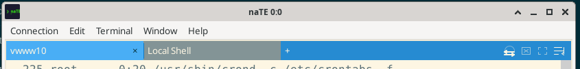
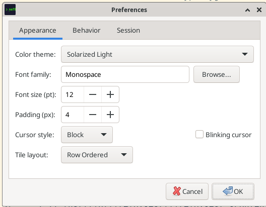
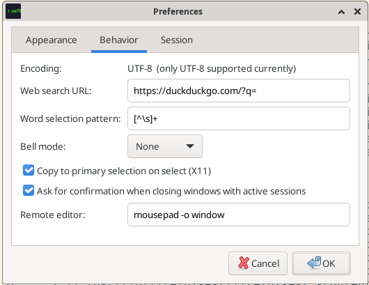
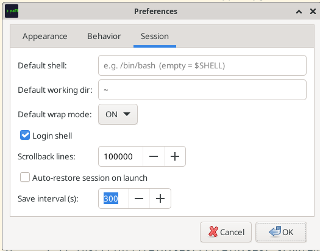

Getting Started
Install naTE and make your first connection in under five minutes.
Installation
AppImage (recommended)
The AppImage bundles all dependencies and runs on any modern Linux distribution without installation.
- Download
naTE-x86_64.AppImagefrom the Releases page. - Make it executable:
chmod +x naTE-x86_64.AppImage - Run it:
./naTE-x86_64.AppImage
Tip: Move the AppImage to ~/.local/bin/ and create a desktop entry if you want it to appear in your application launcher.
Build from Source
You need: CMake 3.22+, a C++17 compiler, wxWidgets 3.2, and libssh2 (fetched automatically if not found).
git clone https://github.com/lhovind/naTE.git
cd naTE
cmake -B build -DCMAKE_BUILD_TYPE=Release
cmake --build build -j$(nproc)
./build/naTEmacOS: Support is experimental. Install wxWidgets via Homebrew (brew install wxwidgets) before building.
First Launch
When naTE starts for the first time you see an empty window with a single terminal tile. The interface has four main zones:
| Zone | Description |
|---|---|
| Menu bar | Connection, Edit, Terminal, Window, Help menus |
| Tile title bar | Tab strip + context-sensitive control buttons on the right |
| Terminal canvas | The actual terminal emulator area |
| Status indicators | Small colored dots on tabs show connection health |
Your First Connection
Open a local shell
- Press Ctrl+N (or Connection → New Connection).
- The New Connection dialog opens with the PTY tab selected.
- Leave all defaults and click Connect.
Your default shell ($SHELL) starts in the current working directory.
Connect to an SSH host
- Press Ctrl+N to open the New Connection dialog.
- Click the SSH tab.
- Fill in Host, Username, and choose an authentication method (agent, key, or password).
- Click Connect.
Auto-fill from ssh config: If your ~/.ssh/config contains the host, naTE will pre-populate the username, port, identity file, and ProxyJump automatically when you type the hostname.
Save a connection profile
After filling in connection details, click Save as Profile at the bottom of the dialog. Give it a name and it will appear in Connection → Connection Manager for quick access later.
Interface Tour
Tile title bar controls
Each tile has a row of controls on the right side of its title bar:

| Control | What it does |
|---|---|
| + | Open a new connection in this tile as a new tab |
| PFW | Open the port-forward manager panel for this session |
| X11 | Shown when X11 forwarding is active; click to check status |
| AltScr | Manually toggle alternate-screen mode (useful for TUIs that get stuck) |
| Wrap | Toggle word wrap — reflow long lines into the visible tile width |
Tabs and status dots
Each session lives in a tab. A small colored dot on the tab indicates connection status:
- No dot: Connected and healthy
- Orange dot: Disconnected — a reconnect bar appears in the terminal
- Pulsing: Reconnecting in progress
Tabs with unread output (i.e., the tab is not currently visible) show a subtle highlight.
The menu bar
| Menu | Key actions |
|---|---|
| Connection | New connection, connection manager, workspaces, wrap/broadcast toggles |
| Edit | Copy, paste, find, preferences |
| Terminal | Reset, file transfer, remote edit, move tile/window, set geometry |
| Window | New window, close, tile layout, session list |
| Help | About dialog |
Preferences Overview
Open Edit → Preferences to configure naTE. The dialog has three tabs:



- Appearance — theme, font family/size, cell padding, cursor style, tile layout default
- Behavior — copy-on-select, confirm-close, bell mode, web search URL, word-select regex, remote editor
- Session — default shell, working directory, wrap mode, login shell, scrollback, auto-restore, save interval
Per-connection overrides: Most session options (geometry, wrap mode, working directory, env vars) can be overridden per connection profile in the New Connection dialog. The profile value takes precedence over the app-wide default.
User Data Directories
naTE stores all user data under ~/.nate/:
| Path | Contents |
|---|---|
~/.nate/config.ini | User configuration (overrides the shipped defaults) |
~/.nate/connections.json | Saved connection profiles |
~/.nate/workspaces/ | Named workspace snapshots |
~/.nate/themes/ | Custom color theme files |
Next Steps
- Connections guide — full SSH options, serial setup, connection profiles
- Sessions & Workspaces — tiling, tabs, restore, broadcast
- Features guide — file transfer, port forwarding, remote edit, X11, search
- Appearance & Themes Shell Helpers — fonts, colors, custom themes
- Keyboard Shortcuts — full shortcut reference